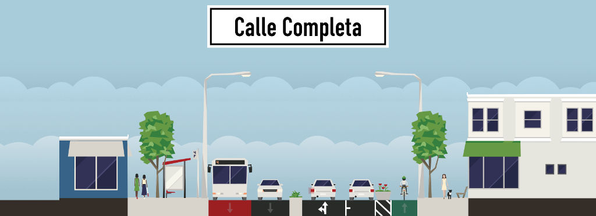
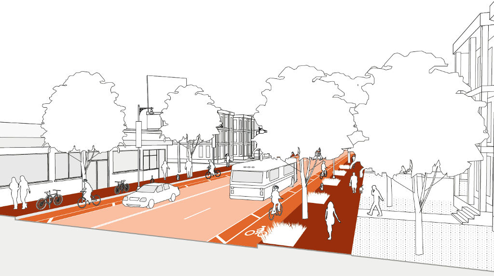
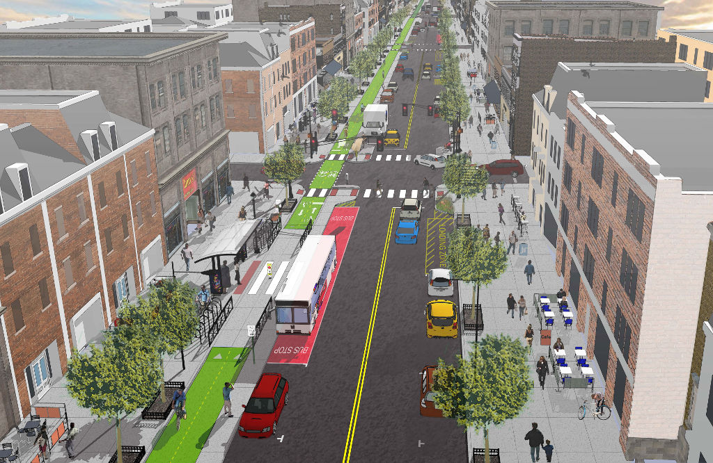
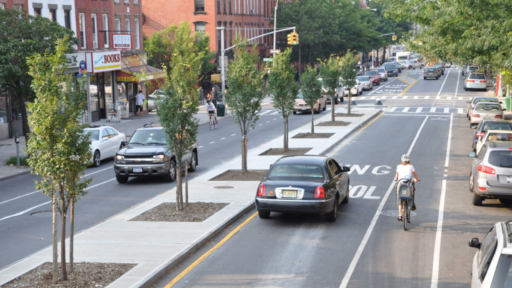

Crear calles para todas las personas: peatones, ciclistas, usuarios del transporte público, motociclistas y automovilistas.
Antecedentes
La inclusión del automóvil en el espacio urbano en la primera mitad del siglo XX, cambió el concepto de calle por completo, situando al coche como personaje protagonista en el escenario vial, dejando de lado a los demás “actores” de la movilidad.
Esta política trajo consecuencias para las ciudades como crecimiento horizontal desmedido, dispersión urbana, contaminación, altos índices de accidentes, así como una movilidad ineficiente y costosa.
Concepto
Políticas y tendencias urbanísticas contemporáneas proponen una solución sencilla y nada nueva: la calle completa, es decir, una calle que incluya a todos los usuarios del transporte público, de todas las edades y con todo tipo de habilidades motoras.
Una calle completa debe permitir la convivencia ordenada de todas las modalidades de movilidad, viendo la calle desde un perspectivo mucho más allá de la vial.

Programa
Este programa de vialidades integrales pretende generar políticas públicas que desarrollen espacios multifuncionales basados en toma de decisiones democráticas y participativas. Todo proyecto de vialidades ya sea de nueva creación o rehabilitación, debe ser completo; adaptándolo a las necesidades y tipologías específicas de cada calle.
¿Qué NO es una Calle Completa?
- NO pretende ser una formula estandarizada para aplicar en todas las vialidades de la ciudad de forma repetible y sistemática.
- NO pretende ser un programa de ciclovías y banquetas peatonales.
- NO pretende ser una política anti-automóvil.

Proyecto Piloto
Se pretende introducir el concepto Calle Completa como proyecto piloto en la Zona Norte de la ciudad, tomando en cuenta las siguientes oportunidades del área:
- Aforos y afluencias de ciclistas de gran magnitud, desde y hacia el Ejido La Unión.
- Población importante de estudiantes debido a la existencia de universidades, colegios y escuelas en el área. Población susceptible para aplicar programas de movilidad no motorizada.
- Infraestructura básica existente.
- Espacios libres de restricciones físicas (con proyectos de desarrollos residenciales y comerciales a corto plazo).

Orden Prioritario de la Movilidad